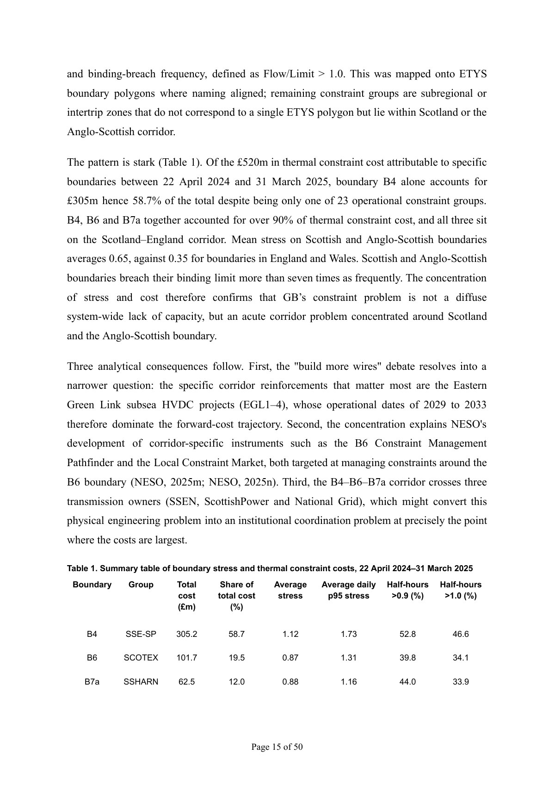

DissertationEnergy systemsData
Grid Infrastructure as a Binding Constraint on Renewable Energy Deployment
A comparative institutional analysis of Great Britain and Germany asking why ambitious renewable systems still face persistent congestion, curtailment and slow grid delivery.
GB + Germanycomparative case study
2019–2025empirical focus
GIS + half-hourly databoundary-stress analysis
I combined institutional analysis with an original spatial measure of transmission-boundary stress. The research finds that governance shapes how congestion costs are distributed and politically attributed, while planning, social acceptance, skilled labour and HVDC supply chains remain common constraints on physical delivery.

50-page dissertation